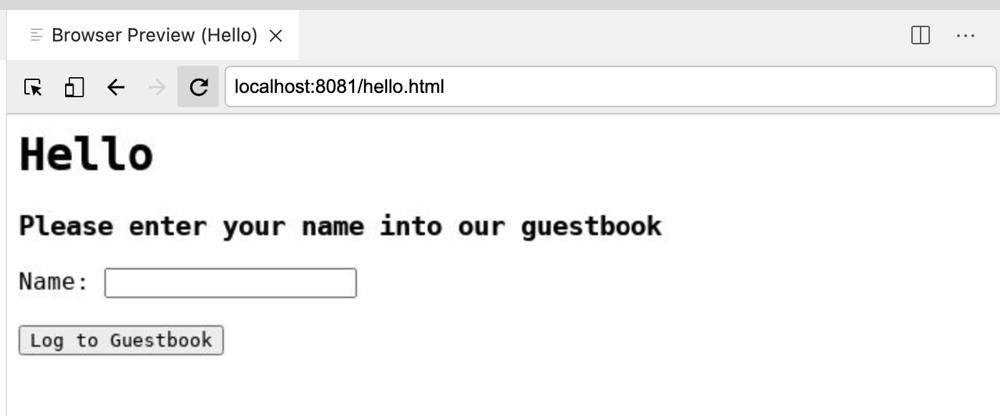

Running your First Container with Podman
In this exercise we’re going to use Podman to download and run a container that will run a local Apache webserver on your VM.

Add a website by running a container
-
First let’s prove that Apache is not currently running on your local VM.
-
In your Local Browser, navigate to
localhost:8081, which instructs the browser to connect to port 8081 of your local instance -
You should find that there is nothing there but a blank screen

Now we’re going to use podman to quickly create a running website on this instance!
-
Login as
rooton your instance by running the following command:sudo -i -
You should now see the terminal prompt change to
#indicating that you are nowroot[root@ansible-1 ~]#Some of you with a security background are probably fairly unconfortable with this. Don’t worry: there’s a method to our madness! It’s worth pointing out that any socket-based container runtimes (such as
docker) require some sort of root access to operate -
From inside the terminal, run the following command (see the footnotes for the breakdown of the different elements of the command):
podman run \(1) --privileged \(2) -d \(3) -p 8081:80/tcp \(4) --name my-web-server \(5) quay.io/mhildenb/container-workshop-httpd:0.0.5 (6)1 This flag, as we’ll come to see, could be problematic. It allows the container to run with an extended set of capabilities that might otherwise be reserved for the host (such as accessing ports < 1024). However, when running some processes in a container, this is sometimes required 2 The podmancommand has a number of subcommands.runindicates that we want to run a given container image3 Run the container in "daemon" mode (in the background) 4 This indicates that we want local port 8081 forwarded to port 80 in the container 5 Whilst we can always refer to started containers by their system assigned Id, the --nameoption gives us the ability to refer to the container by a human-friendly name instead6 This is the name of the image (including the image registry where the container is normally located, in this case quay.io) that we want to run -
After the image is "pulled" you should see something like the following in the terminal which represents the id of the running container
Trying to pull quay.io/mhildenb/container-workshop-httpd:0.0.5... Getting image source signatures Copying blob b5f2e1583bc1 done Copying config 68f54f9c95 done Writing manifest to image destination Storing signatures 4e9c38ac10eb38e9b8364e56aa52eb77ae09062160e61b3f20b60a5af829ba2c (1)1 This is the id of the running container. -
Compare the id there to the output of the following
podmancommand:podman ps -
You should see in the output something like the following that shows you that the container is running
NOTE: notice that the beginning of the CONTAINER ID matches the id the was output from thepodman runcommandCONTAINER ID IMAGE COMMAND CREATED STATUS PORTS NAMES 4e9c38ac10eb quay.io/mhildenb/container-workshop-httpd:0.0.5 /usr/sbin/httpd -... 3 hours ago Up 3 hours ago 0.0.0.0:8081->80/tcp my-web-server -
Finally, return to the Browser Preview panel and hit the reload button. You should see the following web page indicating that an Apache webserver is running:
 Figure 1. Test Page
Figure 1. Test Page -
Our website has more than a test page, it also has a visitor form (like straight out of the 90s!). Let’s take a look by navigating to this address:
-
You should see something like this:
 -
Now enter a name into the
Name:field to be logged to the guestbook and press theLog to Guestbookbutton. You should now be presented a screen like this:
-
Click the
herelink highlighted above to go back and enter another name
Next let’s take a look inside our container
Look inside a running container
Whilst the container is running, we are able to "look inside" the container. The experience is much the same to telnet ing or ssh ing into a remote instance or virtual machine.
-
First though, let’s record what’s going on with the container’s host, namely the virtual machine that is running your code-server instance. We’ll use this to compare to what we find inside the container. Run the following command in the terminal to gather some intel about the host (and save it to a place where code-server can display it!)
cat > /tmp/hostinfo.txt <<EOF User Info: --------- I am $(whoami) $(id) OS Version: ---------- $(cat /etc/os-release) Processes: --------- $(ps -euf) EOF -
Next, let’s use the VS Code editor to see what our command found out. Use CTRL+o (or CMD+o on a Mac) to show the "Open File" dialog. Type the name of the file we wrote out to in the dialog (that is
/tmp/hostinfo.txt) Figure 2. Open File Or Folder dialog
Figure 2. Open File Or Folder dialog -
This should open the file in the left editor pane. The output should look something like the following
User Info: --------- I am root uid=0(root) gid=0(root) groups=0(root) context=system_u:system_r:unconfined_service_t:s0 OS Version: ---------- NAME="Red Hat Enterprise Linux" VERSION="8.3 (Ootpa)" ID="rhel" ID_LIKE="fedora" VERSION_ID="8.3" PLATFORM_ID="platform:el8" PRETTY_NAME="Red Hat Enterprise Linux 8.3 (Ootpa)" ANSI_COLOR="0;31" CPE_NAME="cpe:/o:redhat:enterprise_linux:8.3:GA" HOME_URL="https://www.redhat.com/" BUG_REPORT_URL="https://bugzilla.redhat.com/" REDHAT_BUGZILLA_PRODUCT="Red Hat Enterprise Linux 8" REDHAT_BUGZILLA_PRODUCT_VERSION=8.3 REDHAT_SUPPORT_PRODUCT="Red Hat Enterprise Linux" REDHAT_SUPPORT_PRODUCT_VERSION="8.3" Processes: --------- USER PID %CPU %MEM VSZ RSS TTY STAT START TIME COMMAND root 73993 0.0 0.2 143252 8036 pts/2 S 09:03 0:00 sudo -i LS_COLORS=rs=0:di=38;5;33:ln=38;5;51:mh=00:pi=40;38;5;11:so=38;5;13:do=38;5;5:bd=48;5;232;38;5;11:cd=48;5;232;38;5;3:or=48;5;232;38;5;9:mi=01;05;37;41:su=48;5;196;38;5;15:sg=48;5;11;38;5;16:ca=48;5;196;38;5;226:tw=48;5;10;38;5;16:ow=48;5;10;38;5;21:st=48;5;21;38;5;15:ex=38;5;40:*.tar=38;5;9:*.tgz=38;5;9:*.arc=38;5;9:*.arj=38;5;9:*.taz=38;5;9:*.lha=38;5;9:*.lz4=38;5;9:*.lzh=38;5;9:*.lzma=38;5;9:*.tlz=38;5;9:*.txz=38;5;9:*.tzo=38;5;9:*.t7z=38;5;9:*.zip=38;5;9:*.z=38;5;9:*.dz=38;5;9:*.gz=38;5;9:*.lrz=38;5;9:*.lz=38;5;9:*.lzo=38;5;9:*.xz=38;5;9:*.zst=38;5;9:*.tzst=38;5;9:*.bz2=38;5;9:*.bz=38;5;9:*.tbz=38;5;9:*.tbz2=38;5;9:*.tz=38;5;9:*.deb=38;5;9:*.rpm=38;5;9:*.jar=38;5;9:*.war=38;5;9:*.ear=38;5;9:*.sar=38;5;9:*.rar=38;5;9:*.alz=38;5;9:*.ace=38;5;9:*.zoo=38;5;9:*.cpio=38;5;9:*.7z=38;5;9:*.rz=38;5;9:*.cab=38;5;9:*.wim=38;5;9:*.swm=38;5;9:*.dwm=38;5;9:*.esd=38;5;9:*.jpg=38;5;13:*.jpeg=38;5;13:*.mjpg=38;5;13:*.mjpeg=38;5;13:*.gif=38;5;13:*.bmp=38;5;13:*.pbm=38;5;13:*.pgm=38;5;13:*.ppm=38;5;13:*.tga=38;5;13:*.xbm=38;5;13:*.xpm=38;5;13:*.tif=38;5;13:*.tiff=38;5;13:*.png=38;5;13:*.svg=38;5;13:*.svgz=38;5;13:*.mng=38;5;13:*.pcx=38;5;13:*.mov=38;5;13:*.mpg=38;5;13:*.mpeg=38;5;13:*.m2v=38;5;13:*.mkv=38;5;13:*.webm=38;5;13:*.ogm=38;5;13:*.mp4=38;5;13:*.m4v=38;5;13:*.mp4v=38;5;13:*.vob=38;5;13:*.qt=38;5;13:*.nuv=38;5;13:*.wmv=38;5;13:*.asf=38;5;13:*.rm=38;5;13:*.rmvb=38;5;13:*.flc=38;5;13:*.avi=38;5;13:*.fli=38;5;13:*.flv=38;5;13:*.gl=38;5;13:*.dl=38;5;13:*.xcf=38;5;13:*.xwd=38;5;13:*.yuv=38;5;13:*.cgm=38;5;13:*.emf=38;5;13:*.ogv=38;5;13:*.ogx=38;5;13:*.aac=38;5;45:*.au=38;5;45:*.flac=38;5;45:*.m4a=38;5;45:*.mid=38;5;45:*.midi=38;5;45:*.mka=38;5;45:*.mp3=38;5;45:*.mpc=38;5;45:*.ogg=38;5;45:*.ra=38;5;45:*.wav=38;5;45:*.oga=38;5;45:*.opus=38;5;45:*.spx=38;5;45:*.xspf=38;5;45: LANG=en_US.UTF-8 NODE_OPTIONS=--max-old-space-size=2048 INVOCATION_ID=93bf1877c5a84b61a2b2b3bcbf73a707 COLORTERM=truecolor USER=student1 PWD=/home/student1 HOME=/home/student1 JOURNAL_STREAM=9:69260 VSCODE_GIT_ASKPASS_NODE=/usr/lib/code-server/lib/node TERM_PROGRAM=vscode TERM_PROGRAM_VERSION=1.54.2 VSCODE_GIT_ASKPASS_MAIN=/usr/lib/code-server/lib/vscode/extensions/git/dist/askpass-main.js TERM=xterm-256color SHELL=/bin/bash SHLVL=1 VSCODE_GIT_IPC_HANDLE=/tmp/vscode-git-6a2de23e98.sock LOGNAME=student1 GIT_ASKPASS=/usr/lib/code-server/lib/vscode/extensions/git/dist/askpass.sh PATH=/home/student1/.local/bin:/home/student1/bin:/usr/local/sbin:/usr/local/bin:/usr/sbin:/usr/bin LESSOPEN=||/usr/bin/lesspipe.sh %s _=/usr/bin/sudo root 73995 0.0 0.1 26216 4016 pts/2 S 09:03 0:00 \_ -bash LS_COLORS=rs=0:di=38;5;33:ln=38;5;51:mh=00:pi=40;38;5;11:so=38;5;13:do=38;5;5:bd=48;5;232;38;5;11:cd=48;5;232;38;5;3:or=48;5;232;38;5;9:mi=01;05;37;41:su=48;5;196;38;5;15:sg=48;5;11;38;5;16:ca=48;5;196;38;5;226:tw=48;5;10;38;5;16:ow=48;5;10;38;5;21:st=48;5;21;38;5;15:ex=38;5;40:*.tar=38;5;9:*.tgz=38;5;9:*.arc=38;5;9:*.arj=38;5;9:*.taz=38;5;9:*.lha=38;5;9:*.lz4=38;5;9:*.lzh=38;5;9:*.lzma=38;5;9:*.tlz=38;5;9:*.txz=38;5;9:*.tzo=38;5;9:*.t7z=38;5;9:*.zip=38;5;9:*.z=38;5;9:*.dz=38;5;9:*.gz=38;5;9:*.lrz=38;5;9:*.lz=38;5;9:*.lzo=38;5;9:*.xz=38;5;9:*.zst=38;5;9:*.tzst=38;5;9:*.bz2=38;5;9:*.bz=38;5;9:*.tbz=38;5;9:*.tbz2=38;5;9:*.tz=38;5;9:*.deb=38;5;9:*.rpm=38;5;9:*.jar=38;5;9:*.war=38;5;9:*.ear=38;5;9:*.sar=38;5;9:*.rar=38;5;9:*.alz=38;5;9:*.ace=38;5;9:*.zoo=38;5;9:*.cpio=38;5;9:*.7z=38;5;9:*.rz=38;5;9:*.cab=38;5;9:*.wim=38;5;9:*.swm=38;5;9:*.dwm=38;5;9:*.esd=38;5;9:*.jpg=38;5;13:*.jpeg=38;5;13:*.mjpg=38;5;13:*.mjpeg=38;5;13:*.gif=38;5;13:*.bmp=38;5;13:*.pbm=38;5;13:*.pgm=38;5;13:*.ppm=38;5;13:*.tga=38;5;13:*.xbm=38;5;13:*.xpm=38;5;13:*.tif=38;5;13:*.tiff=38;5;13:*.png=38;5;13:*.svg=38;5;13:*.svgz=38;5;13:*.mng=38;5;13:*.pcx=38;5;13:*.mov=38;5;13:*.mpg=38;5;13:*.mpeg=38;5;13:*.m2v=38;5;13:*.mkv=38;5;13:*.webm=38;5;13:*.ogm=38;5;13:*.mp4=38;5;13:*.m4v=38;5;13:*.mp4v=38;5;13:*.vob=38;5;13:*.qt=38;5;13:*.nuv=38;5;13:*.wmv=38;5;13:*.asf=38;5;13:*.rm=38;5;13:*.rmvb=38;5;13:*.flc=38;5;13:*.avi=38;5;13:*.fli=38;5;13:*.flv=38;5;13:*.gl=38;5;13:*.dl=38;5;13:*.xcf=38;5;13:*.xwd=38;5;13:*.yuv=38;5;13:*.cgm=38;5;13:*.emf=38;5;13:*.ogv=38;5;13:*.ogx=38;5;13:*.aac=38;5;45:*.au=38;5;45:*.flac=38;5;45:*.m4a=38;5;45:*.mid=38;5;45:*.midi=38;5;45:*.mka=38;5;45:*.mp3=38;5;45:*.mpc=38;5;45:*.ogg=38;5;45:*.ra=38;5;45:*.wav=38;5;45:*.oga=38;5;45:*.opus=38;5;45:*.spx=38;5;45:*.xspf=38;5;45: LANG=en_US.UTF-8 COLORTERM=truecolor TERM=xterm-256color SHELL=/bin/bash LOGNAME=root USER=root MAIL=/var/mail/root PATH=/sbin:/bin:/usr/sbin:/usr/bin HOME=/root SHELL=/bin/bash SUDO_COMMAND=/bin/bash SUDO_USER=student1 SUDO_UID=1001 SUDO_GID=1001 XDG_SESSION_ID=c8 XDG_RUNTIME_DIR=/run/user/0 DBUS_SESSION_BUS_ADDRESS=unix:path=/run/user/0/bus root 77307 0.0 0.0 26216 2376 pts/2 S+ 13:16 0:00 \_ -bash LS_COLORS=rs=0:di=38;5;33:ln=38;5;51:mh=00:pi=40;38;5;11:so=38;5;13:do=38;5;5:bd=48;5;232;38;5;11:cd=48;5;232;38;5;3:or=48;5;232;38;5;9:mi=01;05;37;41:su=48;5;196;38;5;15:sg=48;5;11;38;5;16:ca=48;5;196;38;5;226:tw=48;5;10;38;5;16:ow=48;5;10;38;5;21:st=48;5;21;38;5;15:ex=38;5;40:*.tar=38;5;9:*.tgz=38;5;9:*.arc=38;5;9:*.arj=38;5;9:*.taz=38;5;9:*.lha=38;5;9:*.lz4=38;5;9:*.lzh=38;5;9:*.lzma=38;5;9:*.tlz=38;5;9:*.txz=38;5;9:*.tzo=38;5;9:*.t7z=38;5;9:*.zip=38;5;9:*.z=38;5;9:*.dz=38;5;9:*.gz=38;5;9:*.lrz=38;5;9:*.lz=38;5;9:*.lzo=38;5;9:*.xz=38;5;9:*.zst=38;5;9:*.tzst=38;5;9:*.bz2=38;5;9:*.bz=38;5;9:*.tbz=38;5;9:*.tbz2=38;5;9:*.tz=38;5;9:*.deb=38;5;9:*.rpm=38;5;9:*.jar=38;5;9:*.war=38;5;9:*.ear=38;5;9:*.sar=38;5;9:*.rar=38;5;9:*.alz=38;5;9:*.ace=38;5;9:*.zoo=38;5;9:*.cpio=38;5;9:*.7z=38;5;9:*.rz=38;5;9:*.cab=38;5;9:*.wim=38;5;9:*.swm=38;5;9:*.dwm=38;5;9:*.esd=38;5;9:*.jpg=38;5;13:*.jpeg=38;5;13:*.mjpg=38;5;13:*.mjpeg=38;5;13:*.gif=38;5;13:*.bmp=38;5;13:*.pbm=38;5;13:*.pgm=38;5;13:*.ppm=38;5;13:*.tga=38;5;13:*.xbm=38;5;13:*.xpm=38;5;13:*.tif=38;5;13:*.tiff=38;5;13:*.png=38;5;13:*.svg=38;5;13:*.svgz=38;5;13:*.mng=38;5;13:*.pcx=38;5;13:*.mov=38;5;13:*.mpg=38;5;13:*.mpeg=38;5;13:*.m2v=38;5;13:*.mkv=38;5;13:*.webm=38;5;13:*.ogm=38;5;13:*.mp4=38;5;13:*.m4v=38;5;13:*.mp4v=38;5;13:*.vob=38;5;13:*.qt=38;5;13:*.nuv=38;5;13:*.wmv=38;5;13:*.asf=38;5;13:*.rm=38;5;13:*.rmvb=38;5;13:*.flc=38;5;13:*.avi=38;5;13:*.fli=38;5;13:*.flv=38;5;13:*.gl=38;5;13:*.dl=38;5;13:*.xcf=38;5;13:*.xwd=38;5;13:*.yuv=38;5;13:*.cgm=38;5;13:*.emf=38;5;13:*.ogv=38;5;13:*.ogx=38;5;13:*.aac=38;5;45:*.au=38;5;45:*.flac=38;5;45:*.m4a=38;5;45:*.mid=38;5;45:*.midi=38;5;45:*.mka=38;5;45:*.mp3=38;5;45:*.mpc=38;5;45:*.ogg=38;5;45:*.ra=38;5;45:*.wav=38;5;45:*.oga=38;5;45:*.opus=38;5;45:*.spx=38;5;45:*.xspf=38;5;45: LANG=en_US.UTF-8 COLORTERM=truecolor TERM=xterm-256color SHELL=/bin/bash LOGNAME=root USER=root MAIL=/var/mail/root PATH=/sbin:/bin:/usr/sbin:/usr/bin HOME=/root SHELL=/bin/bash SUDO_COMMAND=/bin/bash SUDO_USER=student1 SUDO_UID=1001 SUDO_GID=1001 XDG_SESSION_ID=c8 XDG_RUNTIME_DIR=/run/user/0 DBUS_SESSION_BUS_ADDRESS=unix:path=/run/user/0/bus root 77311 0.0 0.1 61732 5112 pts/2 R 13:16 0:00 \_ ps -euf LS_COLORS=rs=0:di=38;5;33:ln=38;5;51:mh=00:pi=40;38;5;11:so=38;5;13:do=38;5;5:bd=48;5;232;38;5;11:cd=48;5;232;38;5;3:or=48;5;232;38;5;9:mi=01;05;37;41:su=48;5;196;38;5;15:sg=48;5;11;38;5;16:ca=48;5;196;38;5;226:tw=48;5;10;38;5;16:ow=48;5;10;38;5;21:st=48;5;21;38;5;15:ex=38;5;40:*.tar=38;5;9:*.tgz=38;5;9:*.arc=38;5;9:*.arj=38;5;9:*.taz=38;5;9:*.lha=38;5;9:*.lz4=38;5;9:*.lzh=38;5;9:*.lzma=38;5;9:*.tlz=38;5;9:*.txz=38;5;9:*.tzo=38;5;9:*.t7z=38;5;9:*.zip=38;5;9:*.z=38;5;9:*.dz=38;5;9:*.gz=38;5;9:*.lrz=38;5;9:*.lz=38;5;9:*.lzo=38;5;9:*.xz=38;5;9:*.zst=38;5;9:*.tzst=38;5;9:*.bz2=38;5;9:*.bz=38;5;9:*.tbz=38;5;9:*.tbz2=38;5;9:*.tz=38;5;9:*.deb=38;5;9:*.rpm=38;5;9:*.jar=38;5;9:*.war=38;5;9:*.ear=38;5;9:*.sar=38;5;9:*.rar=38;5;9:*.alz=38;5;9:*.ace=38;5;9:*.zoo=38;5;9:*.cpio=38;5;9:*.7z=38;5;9:*.rz=38;5;9:*.cab=38;5;9:*.wim=38;5;9:*.swm=38;5;9:*.dwm=38;5;9:*.esd=38;5;9:*.jpg=38;5;13:*.jpeg=38;5;13:*.mjpg=38;5;13:*.mjpeg=38;5;13:*.gif=38;5;13:*.bmp=38;5;13:*.pbm=38;5;13:*.pgm=38;5;13:*.ppm=38;5;13:*.tga=38;5;13:*.xbm=38;5;13:*.xpm=38;5;13:*.tif=38;5;13:*.tiff=38;5;13:*.png=38;5;13:*.svg=38;5;13:*.svgz=38;5;13:*.mng=38;5;13:*.pcx=38;5;13:*.mov=38;5;13:*.mpg=38;5;13:*.mpeg=38;5;13:*.m2v=38;5;13:*.mkv=38;5;13:*.webm=38;5;13:*.ogm=38;5;13:*.mp4=38;5;13:*.m4v=38;5;13:*.mp4v=38;5;13:*.vob=38;5;13:*.qt=38;5;13:*.nuv=38;5;13:*.wmv=38;5;13:*.asf=38;5;13:*.rm=38;5;13:*.rmvb=38;5;13:*.flc=38;5;13:*.avi=38;5;13:*.fli=38;5;13:*.flv=38;5;13:*.gl=38;5;13:*.dl=38;5;13:*.xcf=38;5;13:*.xwd=38;5;13:*.yuv=38;5;13:*.cgm=38;5;13:*.emf=38;5;13:*.ogv=38;5;13:*.ogx=38;5;13:*.aac=38;5;45:*.au=38;5;45:*.flac=38;5;45:*.m4a=38;5;45:*.mid=38;5;45:*.midi=38;5;45:*.mka=38;5;45:*.mp3=38;5;45:*.mpc=38;5;45:*.ogg=38;5;45:*.ra=38;5;45:*.wav=38;5;45:*.oga=38;5;45:*.opus=38;5;45:*.spx=38;5;45:*.xspf=38;5;45: LANG=en_US.UTF-8 HISTCONTROL=ignoredups SUDO_GID=1001 HOSTNAME=ansible-1.example.com COLORTERM=truecolor SUDO_COMMAND=/bin/bash XDG_SESSION_ID=c8 USER=root PWD=/root HOME=/root SUDO_USER=student1 SUDO_UID=1001 MAIL=/var/spool/mail/root SHELL=/bin/bash TERM=xterm-256color SHLVL=1 LOGNAME=root DBUS_SESSION_BUS_ADDRESS=unix:path=/run/user/0/bus XDG_RUNTIME_DIR=/run/user/0 PATH=/usr/local/sbin:/sbin:/bin:/usr/sbin:/usr/bin:/root/bin HISTSIZE=1000 LESSOPEN=||/usr/bin/lesspipe.sh %s _=/bin/ps root 1096 0.0 0.0 16200 2120 ttyS0 Ss+ May07 0:00 /sbin/agetty -o -p -- \u --keep-baud 115200,38400,9600 ttyS0 vt220 LANG=en_US.UTF-8 PATH=/usr/local/sbin:/usr/local/bin:/usr/sbin:/usr/bin INVOCATION_ID=a5a6851855f042deb0be38d6f784407d TERM=vt220 JOURNAL_STREAM=9:31142 root 1095 0.0 0.0 13632 1760 tty1 Ss+ May07 0:00 /sbin/agetty -o -p -- \u --noclear tty1 linux PATH=/usr/local/sbin:/usr/local/bin:/usr/sbin:/usr/bin INVOCATION_ID=6d76fa0644494f1db0752e0dd836906a TERM=linux JOURNAL_STREAM=9:31141 -
Now let’s get into the container so that we can run the same command. But first
podmanneeds to know which container we mean. There are two different ways to reference the running container, by CONTAINER ID or by NAME. Pick the tab of your choice to show how we can enter the container using either approach:-
Remember how we used the
--nameoption when we ran our container? Now we can use this to indicate to podman which container we want toexecinto:podman exec \ -it \(1) my-web-server \ /bin/bash (2)1 topens a "pseudo tty" to the container that allows us to seeSTDOUT(output) andiindicates that we want to keep theSTDINpipe open (basically allow us to continue to enter input)2 podman execinterprets any argument(s) that come after theCONTAINER ID(orCONTAINER NAME) to be the command and arguments we want to run within in the container. In this case we are running the/bin/bashcommand which is just a shell. When coupled with-itthis allows us to effectively mimicsshing into a VM
-
Once again, let’s use the
podman pscommand to get that info and save it into the variableCONTAINER_IDpodman psAssign Container ID to CONTAINER_IDCONTAINER ID IMAGE COMMAND CREATED STATUS PORTS NAMES 4e9c38ac10eb quay.io/mhildenb/container-workshop-httpd:0.0.5 /usr/sbin/httpd -... 3 hours ago Up 3 hours ago 0.0.0.0:8081->80/tcp my-web-server -
Knowing our
CONTAINER_ID, we can now "enter" the container by way of thepodman execcommand:podman exec \ -it \(1) ${CONTAINER_ID} /bin/bash (2)1 topens a "pseudo tty" to the container that allows us to seeSTDOUT(output) andiindicates that we want to keep theSTDINpipe open (basically allow us to continue to enter input)2 podman execinterprets any argument(s) that come after theCONTAINER ID(orCONTAINER NAME) to be the command and arguments we want to run within in the container. In this case we are running the/bin/bashcommand which is just a shell. When coupled with-itthis allows us to effectively mimicsshing into a VM
-
-
If you have been able to
execinto the container successfully, you should see the following in the terminal[root@4e9c38ac10eb /]# (1)1 Notice that the CONTAINER_IDappears after the@in the bash shell that we have started inside the container -
Now let’s run our command from before but this time we’re running it from "within" the container
cat > /tmp/hostinfo.txt <<EOF User Info: --------- I am $(whoami) $(id) OS Version: ---------- $(cat /etc/os-release) Processes: --------- $(ps -euf) EOF -
Notice that the editor window didn’t change even though we wrote the info to the same location. The difference is that the location is local to the container. That’s because the container has a filesystem that appears separate to the host
-
To make sure the file was created, run the following command to show output of the file that we just created in the container:
cat /tmp/hostinfo.txt -
To make it easier to read, let’s copy the hostinfo to the
/var/www/htmldirectory[1] so that we can view it through the container’s webservercp /tmp/hostinfo.txt /var/www/html/hostinfo.txt -
Now navigate the browser to the file we just copied and you should see something like the image below
 Figure 3. Container’s browser displays our hostinfo.txt
Figure 3. Container’s browser displays our hostinfo.txt
Copying data out of a container
Let’s see just how different the two files are by doing a diff on them. And for this we’d like to use the builtin Visual Studio Code support for this. To do this we can draw on another methapor with real hosts or virtual instances, the notion of ftp ing or scp ing files.
-
First let’s "log out" of the container[2]
exit -
Next, run this command to copy the file out of the container and into the tmp drive of the host instance (Those that have used
scpwill probably find the format familiar)podman cp \ my-web-server:/tmp/hostinfo.txt \(1) /tmp/containerinfo.txt (2)1 The my-web-server:<path>indicates that thepathis inside the container (i.e. container filesystem) that we named with the--nameoption at the time we issued thepodman runcommand2 This path, undecorated by a container name or id, indicates that we are referencing a path on the host (i.e. local filesystem) -
Now click anywhere within the left editor where the
hostinfo.txtshould still be open to give that editor focus. Hit SHIFT+CTRL+p (or CMD+CTRL+p on a Mac) to open the Command Palette and start typingcompareso that you can select the commandFile: Compare Active File With…
-
Then type
/tmp/containerinfo.txtin the next dialog that pops up until the file is selectable. Then click on it.
-
You should then see a screen like the following. Expand the size of the editor as necessary to get a good sense of the differences
 Figure 4. Host vs. Container output of above commands
Figure 4. Host vs. Container output of above commands -
Finally, let’s look at our guestbook visitor log in VSCode by copying the visitor guestbook to our local VM
podman cp \ my-web-server:/var/log/www/visitor_info.txt \ /home/%USER%/container-workshop (1)1 This is a path on your local VM to the container-workshop directory you see in the Explorer -
You should now see the file appear in your Explorer. Click on it to view the contents. It should match the visitors that you entered previously

Stopping the Container (and Apache server)
Before we continue, let’s stop the container that is running in the background (thanks to the -d flag)
-
You can stop a container by its CONTAINER ID or by its NAME. Choose whichever tab you want to access and stop the container
-
Since we used the
--nameoption to name the container when we ran it, it’s easy to stop the right containerpodman stop my-web-server (1)1 my-web-serveris the name we gave the container (with the--nameoption) when we started it
-
Luckily, we have already gotten the container’s ID and stored it in
CONTAINER_ID(see here if you skipped that part).podman stop ${CONTAINER_ID}
-
-
If you were successful in stopping the container, you should see the following output:
4e9c38ac10eb38e9b8364e56aa52eb77ae09062160e61b3f20b60a5af829ba2c(1)1 This will match the CONTAINER IDof any running container that was stopped -
Confirm that the container is stopped by hitting refresh in the Browser Preview. You should again see a blank page as there is not longer anything listening on port 8081
-
We can also see that the container is no longer listed when we run
podman pspodman psCONTAINER ID IMAGE COMMAND CREATED STATUS PORTS NAMES
Committing Containers to Images
Even though our container is stopped, it’s still around!
You might wonder why we would want to keep a container around even after we have stopped it. Turns out it has to do with the fact that we might want to create a new image from the container we’ve just run.
Containers are by their nature immutable. While they are running, however, changes are being made to their file systems. When containers are stopped, we might want to commit those changes that were made to the filesystem whilst running.
For those from an operations background, it’s a little like creating an image snapshot from a Virtual Machine when its stopped. That image can then be used to boot up a machine in a desired state.
With podman the command is commit [3]. Let’s issue the command now and we’ll see some of the value in it a little later on in the lab.
-
First let’s find the stopped container using this variant of the
podman pscommand:podman ps -a (1)1 The -astands for "all" which means "show containers regardless of state"4e9c38ac10eb quay.io/mhildenb/container-workshop-httpd:0.0.5 /usr/sbin/httpd -... 10 minutes ago Exited (0) 2 minutes ago 0.0.0.0:8081->80/tcp my-web-server -
As we can see from the output, the container has been exited and is just waiting there in the state it was in when it was stopped (2 minutes ago according to the output above)
-
Now let’s create an image from that container by committing it:
podman commit \ my-web-server \(1) container-workshop-commit (2)1 This is the name of the container that we have stopped. This could also be done by CONTAINER ID2 This is the name that we want to give the container image. We can then treat this like any other container image -
This should yield output similar to the following:
Getting image source signatures Copying blob 123257361dae skipped: already exists Copying blob c9e02f9d3afe skipped: already exists Copying blob add30eb35c17 skipped: already exists Copying blob 9fdb6895bb7a skipped: already exists Copying blob 6ad7f3f9e262 skipped: already exists Copying blob 8dd6e0f9b8eb skipped: already exists Copying blob fef0b05fc9cf skipped: already exists Copying blob dfe69afd0646 skipped: already exists Copying blob d0081b948274 skipped: already exists Copying blob c1c363c15e6e skipped: already exists Copying blob 6731153d32fc skipped: already exists Copying blob a22151f998a3 done Copying config f154f395c5 done Writing manifest to image destination Storing signatures f154f395c55ed7192f180502495b96cb3c223d9ce50273cda41bb63e272be7d8 (1)1 This is the id of the image that has just been created as a result of the commitcommand -
And now let’s see what images are available by issuing the following command to show all the images we podman knows about locally:
podman images -
The command should yield output that looks something like the following
REPOSITORY TAG IMAGE ID CREATED SIZE localhost/container-workshop-commit latest f154f395c55e 3 minutes ago 265 MB (1) quay.io/mhildenb/container-workshop-httpd 0.0.5 ec71626c6cd3 3 hours ago 265 MB1 Notice that the image that we committed automatically gets a localhostappended to it since we didn’t nominate a registry. Also notice that theIMAGE IDis the abbreviated form of the id that was reported as a result of thecommitcommand
Removing Containers
Having looked at the images on our system, let’s turn our attention back to the containers that are running (or more accurately in our case, stopped)
-
To really tidy things up we need to tell
podmanto remove the container. Issue this command:podman rm my-web-server4e9c38ac10eb38e9b8364e56aa52eb77ae09062160e61b3f20b60a5af829ba2c(1)1 As with podman stop, this will match theCONTAINER IDof any running container that was removed as a result of the commandAs with the other
podmancommands, it’s possible to remove containers by CONTAINER ID. In that case you’d just issue this command (assuming you followed directions above to store the container id in${CONTAINER_ID})podman rm ${CONTAINER_ID} -
And now finally we can prove that the container is gone:
podman ps -aCONTAINER ID IMAGE COMMAND CREATED STATUS PORTS NAMES
"Re-running" Containers
Let’s say we want to take a look at that hostinfo.txt on the container again. Let’s start up our container to try to do that again
-
Execute the following command (which should be familar from earlier in this section)
podman run \ --privileged \ -d \ -p 8081:80/tcp \ --name my-web-server \ quay.io/mhildenb/container-workshop-httpd:0.0.5 -
Now open the browser and navigate to the following location
-
But alas our file is not found and we are met with a 404 Not Found page…

-
How about our
visitor_info.txtfile? Let’s copy that out of the container againpodman cp \ my-web-server:/var/log/www/visitor_info.txt \ /home/%USER%/container-workshop (1)1 This is a path on your local VM to the container-workshop directory you see in the Explorer -
But if you open the
visitor_info.txtafter copying it out, you’ll notice that all the visitor names are gone!
"Re-running" a stopped container by image
Before we through our hands up in disgust, remember that we had the foresight of committing our previously running web server container to a new image called container-workshop-commit. This image should container all the changes we made on top of the my-web-server that we just ran and allow us access to the info that does not exist in the quay.io/mhildenb/container-workshop-httpd:0.0.5.
-
First let’s stop and remove the current
quay.io/mhildenb/container-workshop-httpd:0.0.5image based web serverpodman stop -a (1) podman rm -a1 In both cases the -aindicates that we want tostopandrm(respectively) all containers -
Next, let’s re-run our webserver, but this time from the image we created when we committed it from our first instance of
my-web-server:podman run \ --privileged \ -d \ -p 8081:80/tcp \ --name my-web-server \ localhost/container-workshop-commit (1)1 We append localhostonto any image name that we didn’t explicitly provide a registry (e.g.quay.io) for -
With our committed container running, now attempt to open the browser and navigate to tempfile again
-
This time you should see the file, just as it looked before
Figure 5. Container’s browser once again displays our hostinfo.txt -
And let’s restore our
visitor_info.txtby pulling it out of the container running based on the committed image by issuing the same command as beforepodman cp \ my-web-server:/var/log/www/visitor_info.txt \ /home/%USER%/container-workshop (1)1 This is a path on your local VM to the container-workshop directory you see in the Explorer -
Now our visitor info should be restored to the way it was when we last stopped the container (as verified by opening it in VSCode)
Figure 6.visitor_info.txtrestored
But what good are containers if we can never persist changes we’ve made with them without all this stopping and committing them? Let’s look to the next section to see if there is something else that can be done.
/var/www/html directory is the web root of the apache server that is running inside this container
podman exec ed to stop thus ending the podman exec command and returning us to the host’s terminal